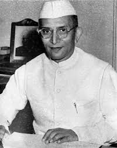

Morariji Desai

Early life[edit]
Birth[edit]
Morarji Desai was born into a Gujarati Anavil Brahmin family.[5][6] His father's name is Ranchhodji Nagarji Desai and his mother's name is Vajiaben Desai. He was born in Bhadeli village, Bulsar district, Bombay Presidency, British India (present-day Valsad district, Gujarat, India) on 29 February 1896, the eldest of eight children. His father was a school teacher.[7]
School education and early career[edit]
Desai underwent his primary schooling in The Kundla School (now called J.V. Modi school), Savarkundla and later joined Bai Ava Bai High School, Valsad. After graduating from Wilson College, Mumbai, he joined the civil service in Gujarat. Desai resigned as deputy collector of Godhra in May 1930 after being found guilty of going soft on Hindus during the riots of 1927-28 there.[8]
Freedom fighter[edit]
Desai then joined the freedom struggle under Mahatma Gandhi and joined the civil disobedience movement against British rule in India. He spent many years in jail during the freedom struggle and owing to his sharp leadership skills and tough spirit, he became a favourite amongst freedom-fighters and an important leader of the Indian National Congress in the Gujarat region. When provincial elections were held in 1934 and 1937, Desai was elected and served as the Revenue Minister and Home Minister of the Bombay Presidency.
In government[edit]
Chief Minister of Bombay and Partition of two state[edit]

Before the independence of India, he became Bombay's Home Minister and was later elected Chief Minister of Bombay state in 1952. It was a period when movements for linguistic states were on the rise, particularly in South India. Bombay was a bi-lingual state, home to Gujarati-speaking and Marathi-speaking people. Since 1956, activist organisation Samyukta Maharashtra Samiti led a movement for a Marathi-speaking state of Maharashtra. Morarji Desai was opposed to such movements, including the Mahagujarat Movement led by Indulal Yagnik demanding a new state of Gujarat.[9] Desai proposed that the metropolitan Mumbai be made a Union territory. His logic was that a separate development region would suit the city's cosmopolitan nature, with citizens from diverse settings across various linguistic, cultural, and religious backgrounds living there for generations. Despite his Gandhian ideals, Desai ordered the police to open fire on the Samyukta Maharashtra Samiti demonstrators who had gathered at Flora Fountain to demand a Marathi-speaking state. The protesters were led by Senapati Bapat. In the carnage that followed, 105 protesters, including an eleven-year-old girl, were killed. The issue escalated and is believed to have forced the Central Government to agree to two separate states based on language. After the formation of the present State of Maharashtra, Bombay, now Mumbai became its state capital. Flora Fountain was renamed "Hutatma Chowk" ("Martyrs' Square" in Marathi) to honour the people killed in the firing. Later Desai moved to Delhi when he was inducted as finance Minister in the cabinet of Prime Minister Jawaharlal Nehru.
Nehru cabinet[edit]
Desai was socially conservative, pro-business, and in favour of free enterprise reforms, as opposed to Prime Minister Jawaharlal Nehru's socialistic policies.
Rising in Congress leadership, as a fierce nationalist with anti-corruption leanings, Desai was at odds with Prime Minister Nehru and his allies, and with Nehru's age and health failing, he was considered as a possible contender for the position of Prime Minister.
Congress party leadership contest[edit]
In 1964 after prime minister's Nehru's death, Desai was outflanked in the leadership contest by the Nehru's protege, Lal Bahadur Shastri. Desai was invited but did not join the short lived Shastri cabinet.[10] In early 1966, the unexpected passing away of Prime Minister Lal Bahadur Shastri after only 18 months in power made Morarji Desai once again a contender for the top position. However, he was defeated by Nehru's daughter, Indira Gandhi, in the Congress party leadership election by a big margin.[11]
Indira Gandhi cabinet[edit]
Desai served as Deputy Prime Minister and Finance Minister of India in the Indira Gandhi government until July 1969 when Prime Minister Gandhi took the finance portfolio from him but asked him to serve as the deputy prime minister. However, to save his self-respect, Desai tendered his resignation from the Gandhi cabinet.[12][13] Gandhi also nationalised the fourteen largest banks in India at the same time.
In opposition[edit]
When the Congress party split in 1969, Morarji joined the Indian National Congress (Organisation) faction of the party, whereas Indira Gandhi formed a new faction called Indian National Congress (Ruling). Alternatively, the two factions of Desai and Indira were called Syndicate and Indicate respectively. The 1971 general elections to the Indian parliament were won by Indira Gandhi's faction in a landslide. Morarji Desai, however, was elected as a member of the Lok Sabha or lower house of Parliament. Morarji Desai went on indefinite hunger strike on 12 March 1975 to support Nav Nirman movement of Gujarat.[14]
In 1975, Indira Gandhi was convicted of electoral fraud by the Allahabad High Court, after opponents alleged she had used government civil servants and equipment during the campaign for the 1971 General Elections.[15] During the subsequent Emergency rule in 1975–77, Desai and other opposition leaders were jailed by the Indira Gandhi government as part of a massive crackdown.
Janata wave of 1977[edit]
The popular anti-corruption movement led by Jayaprakash Narayan and the Janata-wave in 1977 led to the complete routing of the Congress party in Northern India, and a landslide victory for the opposition Janata alliance in the National elections held in March 1977. Morarji Desai was selected by the Janata alliance, later Janata Party as their parliamentary leader, and thus became the first non-Congress Prime Minister of India.[16]
Prime Minister of India (1977-79)[edit]


First term as a Prime Minister[edit]
In January 1977, Indira Gandhi dissolved the Lok Sabha and declared that elections to the body were to be held during March 1977. Opposition leaders were also released and promptly formed the Janata alliance to fight the elections. The alliance registered a landslide victory in the election. On the urging of Jayaprakash Narayan, the Janata alliance selected Desai as their parliamentary leader and thus the Prime Minister.[16]
Foreign policy[edit]
Desai restored normal relations with China, for the first time since the 1962 war. He also communicated with the military ruler of Pakistan, General Zia-ul-Haq and established friendly relations.Despite his pacifist leanings, he refused to sign the non-nuclear proliferation treaty despite the threat of stopping supply of uranium for power plants by the USA Congress.[17]
Nuclear programme[edit]
Domestically, Desai played a crucial role in the Indian nuclear program after it was targeted by major nuclear powers after India conducted a surprise nuclear test in 1974. Desai kept India's nuclear reactors stating "they will never be used for atomic bombs, and I will see to it if I can help it".[18] Internationally, he reaffirmed India's stand that it would not manufacture nuclear weapons and would refrain from conducting even peaceful nuclear explosions.[19] In 1977, the Carter administration offered to sell heavy water and uranium to India for its nuclear reactors but required American on-site inspection of nuclear materials. Desai declined, seeing the American stance as contradictory, in light of its own nuclear arsenal.[20]
Decimation of R&AW[edit]
Morarji Desai had described the Research and Analysis Wing (R&AW), India's external intelligence agency, as the praetorian guard of Indira Gandhi and had promised to stop all activities of the R&AW after becoming prime minister. He closed down much of the agency, and reduced its budget and operations,[21] such as closing its Information Division.[22] B. Raman, the former head of the Counter-Terrorism Division of R&AW and noted security analyst, revealed that in an informal discussion, Morarji Desai indiscreetly told Pakistan's Chief Martial Law Administrator General Zia ul-Haq that his government was well aware of Pakistan's nuclear development.[23]
Intra-party squabbles and collapse of Janata government[edit]
His government undid many amendments made to the constitution during emergency and made it more difficult for any future government to impose a national emergency. However, the Janata Party coalition was full of personal and policy friction and thus failed to achieve much, owing to continuous in-wrangling and much controversy.[24] With no party in leadership of the coalition, rival groups vied to unseat Desai. Controversial trials of prominent Congress leaders, including Indira Gandhi over Emergency-era abuses worsened the fortunes of his administration. In 1979, Raj Narain and Charan Singh pulled out of the Janata Party, forcing Desai to resign from office and retire from politics. The chief reason for the collapse was the demand by the duo and other left-leaning members, like Madhu Limaye, Krishan Kant, and George Fernandes that no member of the Janata party could simultaneously be a member of an alternative social or political organisation. This attack on "dual membership" was directed specifically at members of the Janata party who had been members of the Jan Sangh, and continued to be members of Rashtriya Swayamsevak Sangh, the Jan Sangh's ideological parent.[25]
Retirement and death[edit]
Morarji Desai campaigned for the Janata Party in 1980 General Election as a senior politician but did not contest the election himself. In retirement, he lived in Mumbai and died on 10 April 1995 at the age of 99.[26] When former French Prime Minister Antoine Pinay died on 13 December 1994, Desai became the world's oldest living former head of government. He was much honoured in his last years as a freedom-fighter of his generation.
Morarji Desai was a moralist. He was a vegetarian "both by birth and by conviction."[27]
Social service[edit]
Morarji Desai was a Gandhian follower, social worker, institution builder and a great reformer. He was the Chancellor of Gujarat Vidyapith. Even during his term as the Prime Minister he used to visit and stay at Vidyapith during the month of October. He lived simply and used to write post cards himself even when he held the office of Prime Minister. Sardar Patel deputed him to conduct meetings of farmers in Kaira district which finally led to the establishment of the Amul Cooperative movement. During his rule, he withdrew intervention in Public Distribution System and rationing shops were literally lost due to cheap sugar and oil available in the market.